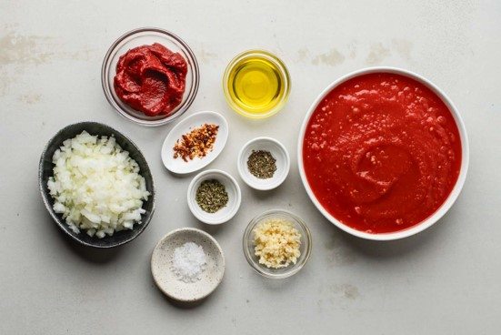

Clone the empty repo to my machine as an R Studio Project
Create a few core folders (data, scripts, outputs)
Add relevant files and commit-push everything
Fire up a script and read in data with here
Use pacman::p_load for loading packages
…spend the next three hours faffing with ggplot
– Intermission –
Why you should share your data, why you shouldn’t share it via GitHub, and where you should share it instead.
Matt Lloyd Jones
Talk outline
Why you should share your data
Why you shouldn’t share your data via GitHub
Where you should share your data instead
*Assuming you are permitted share your data
Talk outline
Why you should share your data
Why you shouldn’t share your data via GitHub
Where you should share your data instead
*Assuming you are permitted share your data
You will soon have to share your data anyway.
Concordat on Open Research Data (signed by HEFCE, UKRI, Universities UK, the Wellcome Trust and more1.
National Institutes of Health (NIH) has required its fundees to eventually make their data publicly available (as of January 2023)2.
US Government moving towards a position of making sharing data mandatory where possible)3.
Like sharing code, sharing data improves the quality of your science.
In the process of making your data publication-ready, you will also find yourself:
Finding mistakes and correcting them
Making sure the data inputted and outputted from your code is consistent
Improving its documentation (for future re-use - most likely by you!)
Your code won’t work without your data.
However, within reason, you shouldn’t store research data in your GitHub repository.
Talk outline
Why you should share your data
Why you shouldn’t share your data via GitHub
Where you should share your data instead
You cannot assign a DOI to a GitHub repository.
Like your publication, your data should have a persistent identifier like a Digital Object Identifier (DOI)
However, you can’t DOI your GitHub repo, or versions of it!
For this reason, GitHub cannot be considered a FAIR (Findable, Accessible, Interoperable and Reusable) data repository
Memory limits
Size of repository as a whole cannot exceed 100 GB (warnings >75 GB and >5GB)1,2
Size of an individual push (which may contain multiple files) cannot exceed 2 GB1,2
Size of each file in it cannot exceed 100 MB (warnings > 50MB)1
In order to prevent negatively impacting GitHub’s infrastructure1
Inconveniences others
Users who just want to play around with your code are forced to download all of your research data too (potentially up to 100 GB!)
Smaller repositories are faster to clone and easier to work with
git is not set up for handling data
git version control system is based around code, not data1
git knows nothing about the structure of common data formats we use (e.g. the tabular structure of CSV files)2
May result in merge conflicts emerging where there are none2
GitHub is like your lab book, not to the freezer in which all your samples are kept.
Talk outline
Why you should share your data
Why you shouldn’t share your data via GitHub
Where you should share your data instead
Rawness of data

Rawness of data
Things to consider when choosing somewhere to store your raw data
Easy to download/upload data from/to via code
Likely to stick around
DOI-able
Example: Open Science framework
Easy to download/upload via the osfr package1
Here to stay for the open science revolution
Allows you to assign DOIs to projects and/or datasets
Things to consider when choosing somewhere to store your processed data
Higher memory limits
Can store your final data in a file structure (ideally alongside the code that produced it)
DOI-able
Example: Zenodo
50GB file size limit1
You can just zip up your local version of your Github repository (with both code and data) at the end of running all your code/analysis, and upload it
Allows you to assign a DOI to the repository as a whole, as well as to different versions of that repository as it evolves through time (and peer review)
Can also ‘reserve’ a DOI which is really handy when writing a manuscript
Zenodo example expanded
Would recommend NOT using the automated GitHub integration, because:
Manual option allows you to reserve a DOI for use in submitted manuscripts (before making the dataset public)
This only allows you to archive your code (since you’re not storing your data on GitHub anymore, right?)
By zipping up and uploading the final, populated repository from your local machine, you can upload data and code together
Storing data outside of GitHub, but in a repositories friendly to GitHub keeps everyone happy!
Final considerations
Following this schema, raw data will be archived on both OSF and Zenodo - but duplication is good in terms of data preservation
OSF and Zenodo are generic repositories, but sometimes a more structured, subject-specific repository is required (e.g. NCBI or ENA for sequence data)
You should consider whether your institution/funder/etc require you to also upload and store the data elsewhere
You should consider whether you are allowed to share all of the data and/or whether you need to anonymise it (particularly raw data)
You can prevent data from being uploaded (‘pushed’) to your GitHub repository alongside changes to code by storing it in data folders (e.g. ‘raw’ and ‘processed’ folders) and including these in your .gitignore file


{kind=link}
{kind=link}